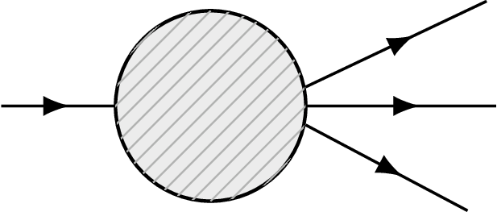
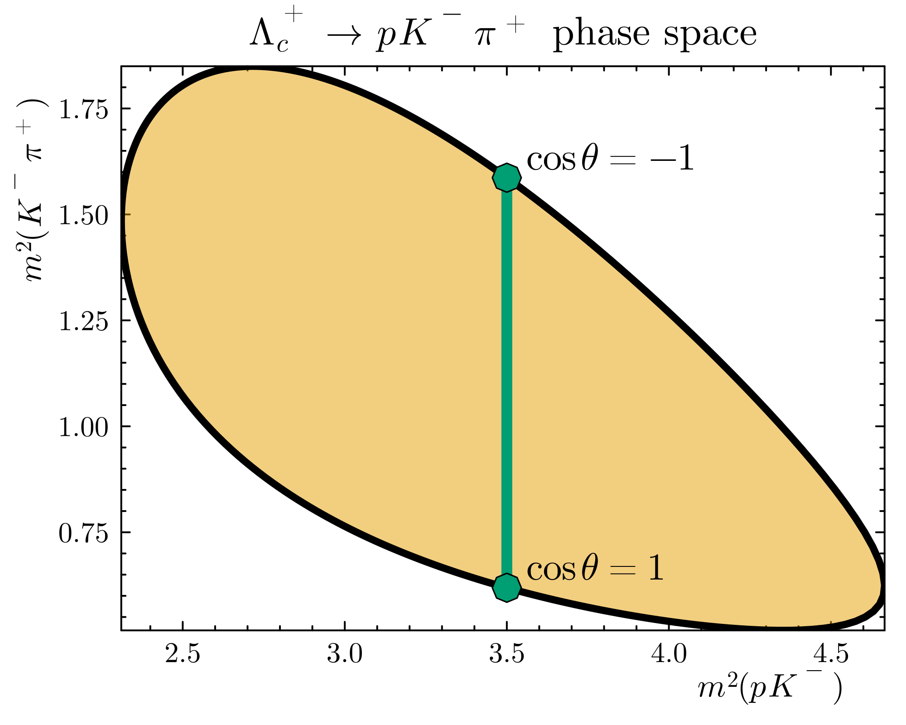
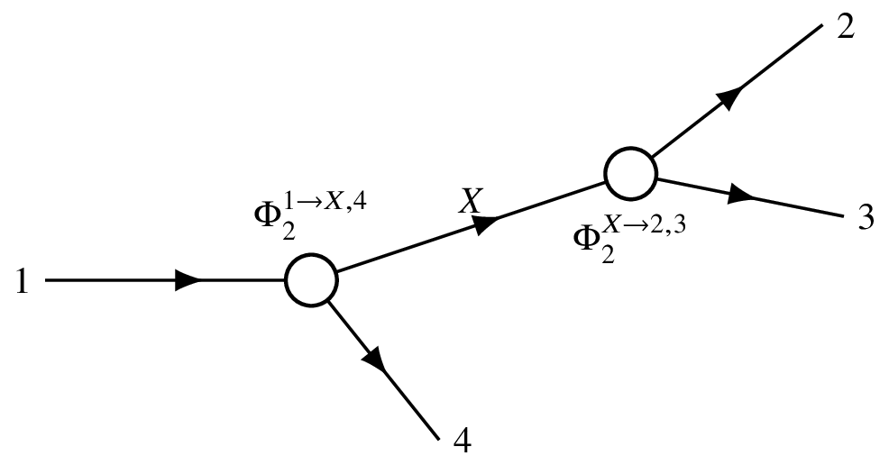
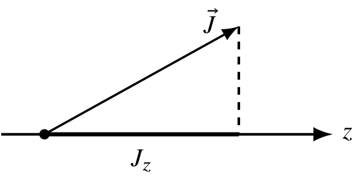
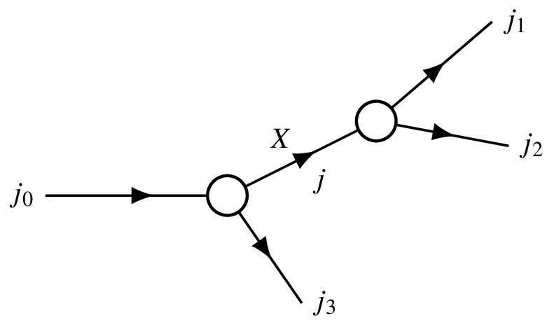
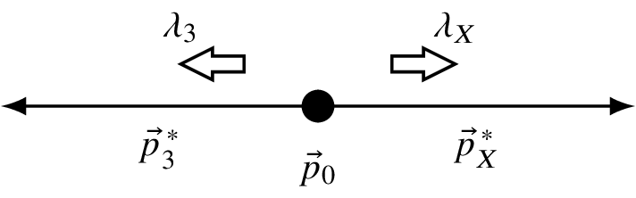
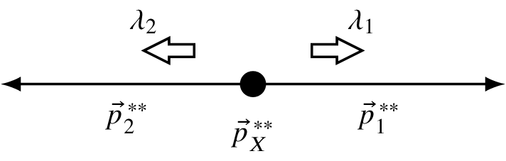

(2024) Lecture 5
Presenter: Mikhail Mikhasenko
Note Taker: Ilya Segal
1 Kinematics of Two-to-Two Scattering: Variables and Invariants
1.1 Lecture 5: Angle Distributions and Partial Wave Analysis
1.1.1 Recap on Two-Body Kinematics
We begin with a recap of kinematics for a two-to-two scattering process of scalar particles ( 0^{-}\to 0^{-} ). The particles are considered point-like; the interaction is represented by a blob (unitarity diagram, not a Feynman diagram). The question: how many variables are needed to fully describe the kinematics?
1.2 Without spin
Calculate the number of degrees of freedom:
(2+2)(4-1)-4 = 8
Subtract 6 for three rotations and three boosts (no absolute reference in space), leaving:
8-6 = 2
Thus 2 independent variables suffice to describe the kinematics of a two-body scattering without spin.
1.3 With spin
If the final-state particles have spin (e.g., 3^{-} and 1^{+} in scattering of 0^{-} $P^{+} $), the kinematics still requires only 2 variables. The angular distributions of the final particles from production do not add independent degrees of freedom because they are determined by the dynamics, not free parameters.
The amplitude in the spin case is not a scalar but a higher-rank object. For spin 3 (7 states) and spin 1 (3 states), the scattering amplitude becomes a$ 7 = 21 $-component object. Nevertheless, all 21 amplitudes depend on the same two kinematic variables. #### Mandelstam Variables
The two variables are commonly chosen as Lorentz-invariant Mandelstam variables:
s = (p_1 + p_2)^2 = (p_3 + p_4)^2 = m_{34}^2
t = (p_1 - p_3)^2
A third variable u is often defined:
u = (p_2 - p_4)^2 = (p_1 - p_4)^2
but u is a linear combination of s and t , so only two are independent.
| Favorite set | Variables | Remarks |
|---|---|---|
| 1st choice | s , t | Most common Mandelstam pair |
| 2nd choice | s , u | Equivalent to s , t |
| 3rd choice | t , u | Also valid |
| Professor’s favorite | \sqrt{s} , \theta | Center-of-mass energy and scattering angle |
The center-of-mass frame (or center-of-momentum frame) is natural: \sqrt{s} is the total energy, and \theta is the angle between initial and final three-momenta (e.g., between \vec{p}_1 and \vec{p}_3 ). In this frame, the magnitudes of initial and final momenta are equal.
Any two non-redundant variables work, but the transformation must be bijective. For instance, choosing lab-frame energies E_1 and E_3 is valid, but the mapping can become non-bijective (folded phase space) in some regions – an advanced consideration.
1.3.1 Connection to Three-Body Decay and the Dalitz Plot
The same counting applies to a three-body decay: one incoming particle, three outgoing. The number of independent variables is again 2 because the number of legs is the same (four legs total).
The three-body phase space can be expressed using the recursive formula, which yields a constant Jacobian when using Mandelstam invariants. The differential width is then:
d\Gamma = \frac{|\mathcal{M}|^2}{2m}\, d\Phi
where d\Phi is the phase-space element. In terms of paired-mass variables m_{34}^2 and m_{24}^2 , the phase space is flat:
\frac{d\Gamma}{dm_{34}^2\,dm_{24}^2} = c\cdot|\mathcal{M}|^2 = \text{constant}
This constancy is the basis of the Dalitz plot: a scatter plot in m_{34}^2 vs m_{24}^2 directly reveals the dynamics ( |\mathcal{M}|^2 ) without distortion from phase-space factors.
The flatness of the phase space in Mandelstam variables is why the Dalitz plot is such a powerful tool: any non-uniformity in the plot comes purely from the interaction amplitude.
1.3.2 Key Formulas from the Recap
Number of degrees of freedom for spinless scattering: (2+2)(4-1)-4 = 8 \quad \Rightarrow \quad 8-6 = 2
Mandelstam invariants for two-body scattering: s = (p_1 + p_2)^2 = (p_3 + p_4)^2 = m_{34}^2
t = (p_1 - p_3)^2For three-body decays (using the same notation with signs adjusted): s = (p_1 - p_2)^2 = (p_3 + p_4)^2 = m_{34}^2
t = (p_1 - p_3)^2Differential width: d\Gamma = \frac{|\mathcal{M}|^2}{2m}\, d\Phi
\frac{d\Gamma}{dm_{34}^2\,dm_{24}^2} = c\cdot|\mathcal{M}|^2
2 Kinematic Variables and the Dalitz Plot in Three-Body Decays
2.0.1 Example of Triple‑G Decay: \Lambda_c \to pK\pi
The \Lambda_c baryon decays to a proton, a kaon, and a pion. This is a triple‑G decay. We measure \Lambda_c produced in proton–proton collisions (or any other collisions). In the Bess and Bell experiments, \Lambda_c is observed; it lives long and is produced abundantly. Charm ground states are produced abundantly and fly a sufficient distance from the primary vertex. We reconstruct them, giving a good sample and a good understanding of the decay kinematics — not only kinematics, but dynamics as well.
In this decay, the initial state contains a charm quark, and the final state contains no charm quark, indicating the process occurs via the weak interaction.

The charm quark decays, transitioning into an s quark that ends up in the kaon. The c \to s transition is within one generation and is not suppressed — an allowed process.
This is the golden channel for registration because the final state has three charged particles (no neutrals). The proton is a charged, stable particle; the kaon and pion are stable in our experiments. They fly away from the decay without distraction, and their tracks are seen nicely through all detectors, pointing away from the primary interaction.
At LHCb energies, there is about a 10 mm shift (≈1 cm) between the primary and secondary vertices. That shift comes from the boost and the fact that the \Lambda_c in the laboratory frame lives longer than in its rest frame; it is produced with a few hundred GeV in proton–proton collisions at the LHC.
This is a super‑nice decay and has been studied extensively. Below is an experimental result from an analysis that resembles the experimental data — the actual data would be indistinguishable from this plot because the statistics are so high that everything is smooth. #### Dalitz Plot Description
The Dalitz plot for \Lambda_c \to pK\pi has:
- ** x -axis**: invariant mass squared of the proton–kaon system, m_{pK}^2 .
- ** y -axis**: invariant mass squared of the kaon–pion system, m_{K\pi}^2 .
All allowed values for the decay are shown in colour; the white area around corresponds to kinematics for which no configuration exists (energy conservation cannot be satisfied). Selecting a point inside the coloured region determines the angles between particles and the lengths of those angles, allowing a rigid‑body model of that kinematic point.
The range of possible invariant masses is limited. The allowed region is called a Dalitz plot — the tool we use to explore the kinematics.
Different colours in the plot indicate different probabilities for the reaction to occur. We reconstruct the tracks of the particles and determine from which kinematic point the decay happened (there is an unambiguous relation between the four‑vectors and the point in the Dalitz plot). It turns out that certain kinematics are more probable than others — particles prefer to go in different directions. #### Kinematic Boundaries and Maximizing m_{pK}
Suppose everything is collinear. One possibility is that the particles are aligned in one line, which corresponds to a boundary of the Dalitz plot. Inside the surface, they always have an angle between them; at the boundary, they are collinear.
Q: How do we maximise the mass of the proton–kaon system? Where does that point lie on the boundary? A: The point should be in the bottom right of the Dalitz plot.
Q: Why? A: To maximise the mass of pK , the three‑momenta should be arranged so that the sum of the three‑momenta is as small as possible. If we add both momentum vectors (p and K) going in the same direction, the forward‑momentum sum should be as large as possible, so we should be on the right. Then if we add the kaon and pion momenta going in the same direction, the invariant mass m_{K\pi} should be as small as possible.
Q: So you argue that m_{K\pi} should be as small as possible? A: Yes, because the three momenta are in line — we subtract them.
The professor’s way of thinking: in the rest frame of the K\pi system, the kaon and pion fly next to each other, so their relative momentum is small. If you boost to that rest frame, they might even be both at rest — their invariant mass would be just the sum of their masses, the minimum mass. That point corresponds to the bottom right of the Dalitz plot (where m_{K\pi} is minimal).
Q: Is this plot from experimental data? A: Yes.
Professor: And how in experiment will we reconstruct such a case, because we will not detect the proton? This is the lab frame. Everything we measure is in the lab frame, which is already boosted. Despite the problem being addressed in the lab frame, it is already boosted. So this point is the maximum mass? No — they have maximum momentum and go back‑to‑back, that corresponds to maximum mass. This point minimises the mass. Good. #### Parameterising the Dalitz Plot with Angles
For a three‑body decay, fix the mass of the K\pi system. In the centre‑of‑momentum frame of the \Lambda_c , the three particles are arranged such that the sum of their three‑momenta is zero. Then boost into the rest frame of the K\pi system. In that frame, the kaon and pion are back‑to‑back and their total momentum is zero; the proton carries the opposite momentum. With the mass of the K\pi system fixed, the lengths of the kaon and pion momenta are fixed; the only variable is the angle \theta between the proton and the direction of the K\pi system. The entire Dalitz plot can be explored by varying \theta from 0 to \pi . One corner corresponds to \theta=0 , the other to \theta=\pi .
Q: Which coordinate corresponds to which corner? A: The right side (bottom right) should be \theta=0 and the left side? We found that when the proton and kaon go in opposite directions, that gives the maximum pK mass. Since the lengths of all vectors are fixed, we can only rotate. The mass of the pK system depends on the angle between them: a wider angle gives a larger mass. When the angle is zero, the mass is high; when they are nearly parallel, the mass is small.
Exactly. The same reasoning applies for other particle pairs.
Now fix the mass of the proton–kaon system. The most straightforward way to analyse a Dalitz plot is to go to the rest frame of that pair, where everything is fixed, and then scan along a line by changing the angle of that pair with respect to the third particle. The lines in the Dalitz plot correspond to fixing one invariant mass and varying the angle in one frame or another. #### Third Variable and Symmetric Representation
There is also a third variable, called u in 2‑to‑2 scattering; for three particles it is the invariant mass of the pion–proton system. The third variable is a linear combination of the two plotted masses. If we fix the mass of one pair, we move along a diagonal in the plot.
In experimental analyses, the standard Dalitz plot has on the x -axis the mass of one pair and on the y -axis the mass of another pair — as shown here.
In the homework, you have an exercise on a more symmetric Dalitz plot, where all three variables enter symmetrically. This uses the property of an equilateral triangle: for any point inside, the sum of the distances to the three sides is constant. The three invariant masses become the distances to the three sides. This symmetric representation is a linear transformation of the standard Dalitz plot, involving a factor \sqrt{3}/2 because of the 60^\circ angles. Both represent the same kinematics. #### Understanding Dynamics: Intermediate Resonances
The objective of these kinematic representations is to understand the dynamics — what processes govern the interaction. In future lectures we will see that the decay \Lambda_c \to pK\pi does not proceed directly; it proceeds via intermediate resonances. For a short moment, two of the particles form an intermediate state that then dissociates, increasing the probability of the decay.
These two particles interact more strongly when their invariant mass matches a resonance, and you see a bump in the cross‑section – a hadronic resonance. By adjusting the energy of that system, you explore how likely the two particles are to interact at that energy. If an intermediate resonance exists, the system resonates, the probability increases, and you see a band in the Dalitz plot (or a peak in a projection onto one axis).
In the example shown, there are resonances in all three pairs:
| Pair | Resonances | Appearance in Standard Dalitz Plot |
|---|---|---|
| K\pi | K^* resonances | Horizontal bands |
| pK | \Lambda resonances | Vertical bands |
| p\pi | \Delta resonances | Diagonal bands |
In the symmetric triangular Dalitz plot, these resonance bands are parallel to the three sides. #### Differential Decay Rate
The differential decay rate for this three‑body decay is
\frac{d\Gamma}{dm_{pK}^2\,dm_{K\pi}^2} = c\,|\mathcal{M}|^2,
so the colour intensity in the plot is proportional to the squared matrix element |\mathcal{M}|^2 .
The same formula structure appears in the general phase‑space integration: \frac{d\Gamma}{dm_{34}^2\,dm_{24}^2} = c\,|\mathcal{M}|^2 , where m_{34} and m_{24} are invariant masses of two particle pairs. For \Lambda_c \to pK\pi , m_{34}=m_{pK} and m_{24}=m_{K\pi} (or equivalently any two independent pairs).
3 The Dalitz Plot of Λc⁺ Triple-Body Decay
The angular distribution for a decay within one band is discussed next. Kinematics: when traversing the Dalitz plot while keeping the mass of a combination fixed, the angle changes.

Different angles are explored.
In the rest frame of the K\pi system (where the band occurs), traversing the phase space by changing the angle reveals an inhomogeneity: sometimes one edge of the band has a different probability than the other. Aligned configurations are more probable than perpendicular ones. This preference arises because particles have spin.
The inhomogeneity appears only because the intermediate resonance — here the K — is not a scalar particle; it has spin. Spin causes inhomogeneity in angular distributions and thus on the Dalitz plot.
Angular distributions are a powerful tool to understand particle properties. They allow measurement of spin, parity, and other quantum numbers. Particles with higher spin produce more bumpy, spiky angular distributions. Scalar particles produce no asymmetries — no structures.
By examining the angular distribution, especially in the rest frame of the decaying particle, one studies the ratio of aligned kinematics to other types. From this, spin information can be inferred.
For most discovered particles, quantum numbers are not yet known. Particles appear as bumps in the spectrum; determining quantum numbers is the next step. This is done by looking at angular distributions.
Often the method is as simple as inspecting the Dalitz plot for a minimum in the angular distribution, or seeing if the line has several structures — several nodes. For scalar particles in the final state, the nodes directly indicate the spin:
| Number of nodes | Spin |
|---|---|
| 1 | 1 |
| 2 | 2 |
| 3 | 3 |

The intensity vanishes at these points.
If the particles are not scalar — and most are not — the situation is more complicated. An example of scalar resonances will be given later.
Check the spins in this example:
| Particle | Spin |
|---|---|
| Proton | 1/2 |
| Kaon | 0 |
| Pion | 0 |
| Lambda | 1/2 (same as proton) |
If one considers a certain spin projection of the lambda and the proton, nodes and zeros again appear in the angular distribution. However, because the initial lambda is not polarized and the final-state spins are not measured, everything is averaged. Consequently, minima, nodes, or zeros are smeared out.
4 Dalitz Plot and Phase Space in Three-Body Decays
A particle with spin J has 2J+1 projections onto the quantization axis. We choose the z -axis to quantize the spin.

The operator \hat{J}_z measures the projection:
\hat{J}_z |J m\rangle = m |J m\rangle .
The ket |J M\rangle can be thought of as a vector with 2J+1 components. All operators are matrices acting on these vectors, producing either the same state with a certain eigenvalue or a mixture of states.
When a rotation is applied to a state, the result is not a single state but a mixture of different M states. In quantum mechanics, unlike ordinary vector space, rotating a state generally produces a superposition of all M states. A rotation about the y -axis is given by
R_y(\theta) |J m\rangle = e^{-i \hat{J}_y \theta} |J m\rangle , \qquad J_y = \frac{J_+ - J_-}{2i}.
The raising and lowering operators J_+ and J_- have nonzero off‑diagonal matrix elements, so J_y has zeros on the diagonal and nonzero off‑diagonal elements. This contrasts with \hat{J}_z , which is diagonal in the |J m\rangle basis:
| Operator | Diagonal matrix elements | Off‑diagonal matrix elements |
|---|---|---|
| \hat{J}_z | Nonzero (eigenvalues m ) | Zero |
| \hat{J}_y | Zero | Nonzero |
To apply the transformation, one must compute the matrix exponential of J_y , but the results are tabulated as Wigner d -functions:
R_y(\theta) |J m\rangle = \sum_{m'} d^J_{m' m}(\theta) |J m'\rangle .
The coefficients depend on the initial state; the J and M indices are kept in the notation. For example, suppose we have a spin‑1 particle originally oriented along the y -axis and then rotate it by 30^\circ . One looks up the Wigner d -functions to find the decomposition.
Any orientation in space can be described by three Euler angles. In particle physics conventions, we first rotate by \phi about the z -axis, then by \theta about the y -axis, and then by \alpha about the z -axis again:
R = R_z(\alpha)\, R_y(\theta)\, R_z(\phi) .
These are the same Euler angles used in chemistry. The full Wigner D -function is
D^J_{m' m}(\alpha,\theta,\phi) = e^{-i m' \alpha} \; d^J_{m' m}(\theta) \; e^{-i m \phi},
where the z -axis rotations give simple phases and the \theta part is the nontrivial factor.
As a small example, consider spin‑ 1/2 . Rotating the state |\tfrac12,\tfrac12\rangle by 30^\circ about the y -axis yields a combination of |\tfrac12,\tfrac12\rangle and |\tfrac12,-\tfrac12\rangle . The Wigner d -matrix for j=1/2 is
d^{1/2}_{m' m}(\theta) = \begin{pmatrix} \cos(\theta/2) & -\sin(\theta/2) \\ \sin(\theta/2) & \cos(\theta/2) \end{pmatrix}.
For \theta = 30^\circ , the half-angle is 15^\circ . The lecturer remarks that choosing \theta = 60^\circ would have given the nicer half-angle 30^\circ , but proceeds with \theta = 30^\circ . Therefore
R_y(30^\circ) \left|\tfrac12,\tfrac12\right\rangle = \cos 15^\circ \left|\tfrac12,\tfrac12\right\rangle + \sin 15^\circ \left|\tfrac12,-\tfrac12\right\rangle .
These coefficients are closely related to Clebsch‑Gordan coefficients and are tabulated. We will not go into details now; hopefully in the seminar we will explore them more.
5 Dalitz Plot Resonances and Angular Distributions
One might wonder whether one can calculate any rotations of the spin projection using Wigner D functions. The answer is yes—it looks alright. What is important to note is the convention of minus signs. In previous exercises these matrices were computed via matrix exponentiation. In principle one can do that using Python or Julia: put a matrix into a matrix exponent function and obtain the Wigner D functions. They can also be looked up—they are tabulated.
Be careful with Mathematica. Mathematica uses an opposite convention: a plus sign and some indices are swapped. Wikipedia is the most reliable source for conventions. Looking up Wigner D functions gives a table with conventions and everything. Wikipedia is the go‑to page for checking Wigner D functions. They are coded correctly in Python in the SymPy library and also in ROOT.
| Source | Convention |
|---|---|
| Mathematica | Opposite sign and swapped indices compared to standard |
| Wikipedia / SymPy / ROOT | Standard, correct conventions |
So far the discussion involved only strong interactions, not weak. It was about rotations and the rotation group. That is a fun part: to understand how particles behave and what the angular distributions are, very little from the strong interaction is needed. You need the general properties of the rotation group. Angular distributions are determined by general properties—how space is rotated—plus a little from strong interactions: the preference for which spin particles are produced. That is what strong interactions tell us. But how they decay and what the asymmetry in the kinematics is—that is determined by the rotation group. That is amazing.
Therefore we can now move on and have a recipe—a general way to construct any particle decay chain and figure out what the angular distribution will be.
The rotation operator for a spin‑ J state is
R_y(\theta) = e^{-i \hat{J}_y \theta},
where \hat{J}_y = \frac{\hat{J}_+ - \hat{J}_-}{2i} . Applying this operator to a state gives
R_y(\theta) \, |J m\rangle = \sum_{m'} d^J_{m' m}(\theta) \, |J m'\rangle.
More generally, for a rotation R we obtain the Wigner D‑matrix:
R \, |J m\rangle = \sum_{m'} D^J_{m' m}(R) \, |J m'\rangle.
The general rotation can be decomposed into three Euler rotations:
R = R_z(\phi) \, R_y(\theta) \, R_z(\alpha),
so that
D^J_{m'm}(\alpha,\theta,\phi) = e^{-i m' \alpha} \, d^J_{m'm}(\theta) \, e^{-i m \phi}.
The basis states for spin‑ \frac12 are
\left| \frac12, \frac12 \right\rangle = \begin{pmatrix} 1 \\ 0 \end{pmatrix}, \qquad \left| \frac12, -\frac12 \right\rangle = \begin{pmatrix} 0 \\ 1 \end{pmatrix},
and they satisfy \hat{J}_z |J m\rangle = m\,|J m\rangle .
As an example, for a rotation of 30^\circ about the y -axis applied to the m=\frac12 state:
R_y(30^\circ) \left| \frac12, \frac12 \right\rangle = \cos 15^\circ \left| \frac12, \frac12 \right\rangle + \sin 15^\circ \left| \frac12, -\frac12 \right\rangle.
6 Angular Distributions and Wigner D Functions for Spin Determination
We assume a cascade production mechanism inside the decay region (the “blob” from the previous slide): the initial particle decays to an intermediate particle X with spin J , then X decays to particles 1 and 2. (see Figure 1)

It is not kinematics; it really comes from modeling assumptions.
Because all particles carry spin, the amplitude is a matrix whose dimension is the product of the spin multiplicities:
(2j_0+1) \times (2j_1+1) \times (2j_2+1) \times (2j_3+1). (see Figure 2)

A spin‑0 particle contributes a factor of 1. The amplitude depends on two variables (e.g., s and \cos\theta ). The sum over the intermediate spin projections accounts for the cascade.
We work in aligned kinematics: particles 1 and 2 are in the rest frame of X , and particle 3 is in the initial‑state centre‑of‑mass frame. This choice is general and can be extended to any cascade decay.
The amplitude contains two distinct parts: (see Figure 3)
| Component | Description |
|---|---|
| Angle dependence | Model‑independent, driven by the Poincaré group, expressed through Wigner D -functions. |
| Dynamics (the “dark blobs”) | The H factors that encode the specific weak, strong, or electromagnetic interaction. The physics sits here; for hard interactions the H factors are unknown a priori. |
The helicity \lambda of a particle is the projection of its spin onto its direction of motion. This is the natural quantization axis.
The general amplitude is written as a sum over the intermediate spin projection \lambda'_X :
A_{\lambda_0, \lambda_1, \lambda_2, \lambda_3}(s, \theta) = \sum_{\lambda'_X} H^X_{\lambda_0 \lambda'_X} \, D^{j_X}_{\lambda'_X \lambda_X}(\theta_X, \phi_X) \, H^Y_{\lambda_X \lambda_Y} \, D^{j_Y}_{\lambda_Y \lambda_3}(\theta_Y, \phi_Y).
The first index of a D -function tells which particle decays; the second index tells where it decays (the rotation needed to align the quantization axis with the decay direction). The index \lambda_X is the helicity of particle X . For the initial particle (index 0 ) the helicity is \lambda_0 ; for the final particles 1,2,3 the helicities are \lambda_1,\lambda_2,\lambda_3 .
In aligned kinematics the rotation angles vanish: \theta_X = \theta_Y = 0 . Then no rotation is needed because X already moves along the z -axis. The amplitude simplifies to
\sum_{\lambda'_X} H^X_{\lambda_0 \lambda'_X} \, D^{j_X}_{\lambda'_X \lambda_X}(0) \, H^Y_{\lambda_X \lambda_Y} \, D^{j_Y}_{\lambda_Y \lambda_3}(0).
Since D^{j}(0) = \delta , this forces the constraint \lambda_X = \lambda_0 + \lambda_3 – only helicity combinations that align with the initial and final helicities survive.

The final expression becomes
H_0 \, D(\theta, J_X)_{\lambda_X, \lambda_3} \, D_{\lambda_0 + \lambda_3, \lambda_1 - \lambda_2}, \qquad \lambda_X = \lambda_0 + \lambda_3.
That’s it – as simple as that.
The aligned‑kinematics evaluation eliminates the sum over \lambda'_X and reduces the amplitude to a product of a single H_0 and two D -functions. The constraint \lambda_X = \lambda_0 + \lambda_3 is a direct consequence of angular‑momentum conservation when no rotation is needed.
| Helicity | Particle |
|---|---|
| \lambda_0 | Initial particle |
| \lambda_1, \lambda_2 | Decay products of X |
| \lambda_3 | Particle 3 in the CM frame |
| \lambda_X | Intermediate particle X (constrained to \lambda_0 + \lambda_3 ) |
7 Cascade Decay Kinematics and Helicity Amplitudes
To predict the angle distribution in a decay process, one needs only the production amplitude and the decay amplitude as input. The number of values needed for each amplitude is (2j_1+1)(2j_2+1) , which may depend on the masses of the particles involved (e.g., the mass of X ). Often in a first experimental analysis, these blocks are approximated:
| Block | Approximation | Number of values |
|---|---|---|
| Production amplitude | Constant c | (2j_1+1)(2j_2+1) |
| Decay amplitude | Particle property (e.g., H functions) | Similar number |
Once this simplification is made, the angle distribution can be computed. The differential decay rate is given by:
\frac{d\Gamma}{d\cos\theta} = \frac{|\mathcal{M}|^2}{2m}\frac{1}{(8\pi)^2}.
The variable \cos\theta is preferred over \theta because its Jacobian is simpler (no sine factor). The distribution in \cos\theta ranges from -1 to 1 . It can take several shapes: a flat distribution, a parabola (second-order polynomial in \cos\theta ) , or other common distributions.
The amplitude A is a probability amplitude; when squared it gives the observed probability. The functions representing the blocks (e.g., H functions) appear squared in the squared amplitude. For unpolarized decays, we average over initial spin projections and sum over final spin projections:
\bar{|\mathcal{M}|^2} = \frac{1}{(2j_1+1)(2j_2+1)}\sum_{\lambda_i,\lambda_f}|A_{\lambda_i,\lambda_f}|^2.
One approach to analyze the angle distribution is projection onto Legendre polynomials (called partial wave analysis or moment analysis). The function f(\cos\theta) defined on [-1,1] is expanded as:
f(\cos\theta) = \sum_{l=0}^{\infty} a_l P_l(\cos\theta).
In partial wave analysis, the amplitude is written as a sum over Wigner D -matrices:
A_{\lambda_0\lambda_1\lambda_2} = \sum_{\lambda_X} H^X_{\lambda_0\lambda_X} \, D^{j_X}_{\lambda_X\lambda_1}(\theta,\phi) \, H^Y_{\lambda_X\lambda_2},
where D^{j_X}_{\lambda_X\lambda_1} is a Wigner D -matrix. The H functions are free parameters that are adjusted to fit the data. As a first step, it is common to project the angle distributions onto the Legendre polynomials, which yields combinations of the H functions rather than their individual values. This is a nontrivial exercise and will be discussed further.
8 Identifying Dalitz Plots from Unlabeled Decays
The lecture briefly touched on differences between the canonical state (introduced at the beginning) and the helicity state (introduced later). They differ in how the state is defined in the rest frame. More details will be explored later.
8.1 Comparison of state definitions (as described in the lecture) (see Figure 3)
:::
| Aspect | Canonical state | Helicity state |
|---|---|---|
| Introduced | Early in the lecture | Later in the lecture |
| Definition in rest frame | Touched briefly | Touched briefly |
| Coverage in reference book | Chapter 4 of Spearman | Chapter 4 of Spearman |
An exercise will be handed out: (see Figure 1) (see Figure 2) (see Figure 6)
- Dalitz plots from CLEO and BaBar are provided, with labels removed.
- One plot corresponds to a D decay, the other to a D _s decay – but it is not specified which is which.
- The axis labels are present, but the masses are unknown.
- From kinematics alone (using the known final-state particles? actually the students do not know which particles are in the final state), they must deduce the masses and, from that, identify which decay is shown.
The lecturer expects that students know enough kinematics to figure out the decay process by analyzing the Dalitz plot.